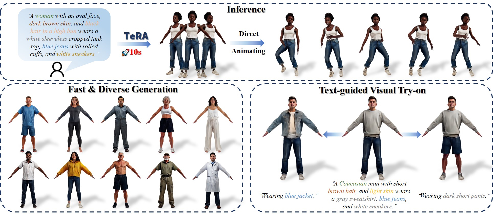
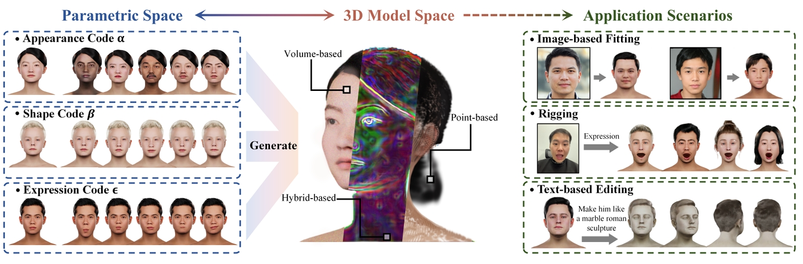

CVPR 2025 IDOL: Instant Photorealistic 3D Human Creation from a Single Image Yiyu Zhuang*, Jiaxi Lv*, Hao Wen*, Qing Shuai, Ailing Zeng#, Hao Zhu#, Shifeng Chen, Yujiu Yang, Xun Cao, Wei Liu Paper ↗ Project ↗ Code ↗ Data ↗
 ICCV 2025 TeRA: Rethinking Text-guided Realistic 3D Avatar Generation Yanwen Wang*, Yiyu Zhuang*, Jiawei Zhang, Li Wang, Yifei Zeng, Xun Cao, Xinxin Zuo, Hao Zhu# Paper ↗ Project ↗ Code ↗
 Fundamental Research 2026 Towards Native Generative Model for 3D Head Avatar Yiyu Zhuang*, Yuxiao He*, Jiawei Zhang*, Yanwen Wang, Jiahe Zhu, Yao Yao, Siyu Zhu, Xun Cao, Hao Zhu# Paper ↗
ECCV 2024 Head360: Learning a Parametric 3D Full-Head for Free-View Synthesis in 360° Yuxiao He, Yiyu Zhuang^, Yanwen Wang, Yao Yao, Siyu Zhu, Xiaoyu Li, Qi Zhang, Xun Cao, Hao Zhu# Paper ↗ Project ↗ Code ↗ Data ↗
AAAI 2024 NeAI: A Pre-convolved Representation for Plug-and-Play Neural Illumination Fields Yiyu Zhuang*, Qi Zhang*, Xuan Wang, Hao Zhu#, Ying Feng, Xiaoyu Li, Ying Shan, Xun Cao Paper ↗ Project ↗
SIGGRAPH Asia 2023 Anti-Aliased Neural Implicit Surfaces with Encoding Level of Detail Yiyu Zhuang*, Qi Zhang*, Ying Feng, Hao Zhu#, Yao Yao, Xiaoyu Li, Yan-Pei Cao, Ying Shan, Xun Cao Paper ↗ Project ↗
ECCV 2022 MoFaNeRF: Morphable Facial Neural Radiance Field Yiyu Zhuang*, Hao Zhu*, Xusen Sun, Xun Cao# Paper ↗ Project ↗ Code ↗ Data ↗